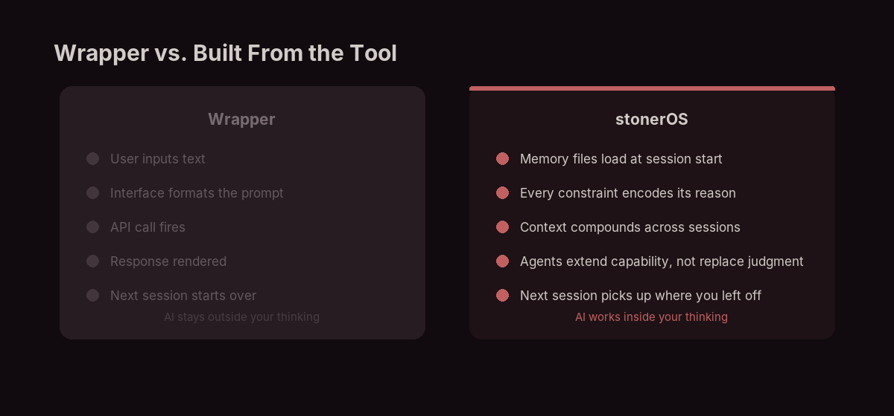
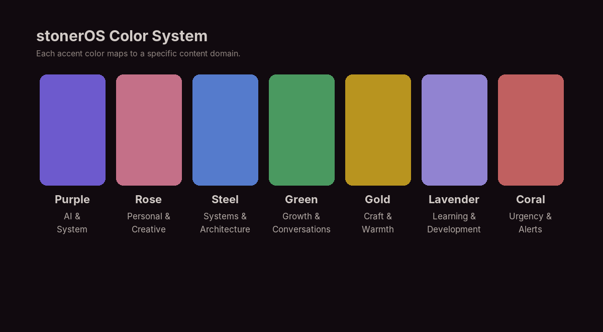

The curation is the work the tool doesn't do.
The pattern shows up just about everywhere AI gets used to make things. Browse the "I built this with AI" posts—and it generally starts looking the same. Same rounded corners, typography pairings, and heading hierarchy styles…
The tools set the defaults. The defaults set the aesthetic. More things got made, and volume and quality still aren't the same thing.
The hardest part was never building; it was knowing what to build, and how it should feel.
Built From the Tool, Not On Top of It
stonerOS is a persistent memory system I built for Claude—a folder of markdown files, automation hooks, and specialized agents that give an AI assistant durable context about how I work. There's no interface, no web app, no subscription. The "app" is Claude Code, a CLI I was already using.
Most AI tools abstract the model away from you. stonerOS does the opposite. Every design decision required me to think through what I was actually asking the system to do.

When I built the session-writer agent, I made it the only agent allowed to write to the learnings directory. That rule came from a real problem: parallel writes were corrupting session files. The constraint encodes its own reason.
A cloned template gives you the rule without that. It breaks the moment your use case diverges. Building it yourself gives you the principle.
Design Is Not Pixels
Design is deciding what to include, what to cut, how information flows, and what the system shouldn't do.
I built a writing board to track everything I publish—status, dates, channels, calendar sync. The code took three hours. Claude wrote most of it.
What took three weeks was figuring out what it should show.
Early versions tried to surface everything: every channel, every date, every field in the schema. Technically complete, immediately useless. Too much information at equal weight is noise.
The version I use shows three things: what's stalled, what's due, what's drifted from the calendar. That came from using the first version and noticing what I actually looked at.
The same logic is in the stonerOS color system. Each accent color maps to a content domain—purple for AI and system content, rose for personal and creative work, steel for team content.
The palette is muted and warm because those colors thread through headings, borders, and icons without competing with the content. None of that came from generating palettes and picking one. It came from years managing sub-brands in L&D—I already knew what each color needed to do. The AI generated the variations.

Same thing happened with writing. I kept shipping drafts that technically landed but felt smoothed out—too measured, too balanced, like a professional editor had been through them. The specific texture of how I actually write wasn't there.
So I built a voice-qa agent to catch that moment. The test isn't grammar. It's whether someone who knows my writing would recognize it.
That's the job. Not the rendering. Seeing the shape of what the thing is for, then holding that shape while the generation runs.
What Happened When YouTube Launched
In 2005, YouTube gave anyone with a camera global distribution—no network, no budget required. The barrier collapsed.
What happened to quality?
The floor rose. More got made, and average production went up as tools improved. The ceiling didn't move. The channels that dominated weren't the ones with the best cameras. They were the ones with a point of view—specific, communicated clearly enough that slightly rough audio didn't matter.
The camera gave everyone production capability. It didn't give anyone something to say.
Same inflection point now. The barrier to shipping—an app, a site, a piece of writing, an agent—has collapsed the same way. What hasn't changed is the value of knowing what you're trying to make, and being able to look at the output and know when it isn't done.
The tools got better. The taste didn't come with them.
What This Changes
Production is broadly available now. More experiments get run. More ideas get tested without a team or a budget. That's genuinely good.
But capability and judgment aren't the same thing. The photographer who buys a better camera doesn't immediately take better photographs.
The skill that matters is directing AI, not prompting it. Prompting is learned fast. Directing takes reps—shipping enough things, watching them fall short, building the vocabulary to say why before the iterations get purposeful.
The taste gap isn't between people who use AI and people who don't. It's between treating generation as the endpoint and treating it as the start.
The building part got easy. The rest of the work is still the rest of the work.